所有括号中的文献均见于后面的参考书目。
引言
1.引文出自[Ceruzzi]，第43页。霍华德·艾肯（1900～1973）组建了哈佛大学计算实验室，并于20世纪40～50年代在哈佛大学帮助设计和建造大型计算设备。
2.引文出自一篇向伦敦数学会所作的讲演[Turing 1]，第112页。阿兰·图灵是本书第七章和第八章的主题。
第一章
1.关于莱布尼茨的传记材料，我主要取自[Aiton]。
2.关于莱布尼茨的Dissertatio de Arte Combinatoria（唉，原文为拉丁文），参见[Leibniz 1]。
3.莱布尼茨在巴黎的数学著作在[Aiton]中有所讨论，更详尽的见于[Hofmann]。
4.引自[Leibniz 3]。
5.莱布尼茨关于推理和解方程机器的著作，参见[Couturat]，第115页。
6.对牛顿和莱布尼茨所创立的微积分的数学细节感兴趣的读者将会喜欢[Edwards]中的细致讨论。关于微积分历史发展的优秀论述，读者还可参考[Bourbaki]，第207～249页。
7.关于莱布尼茨的微积分运算还有另一个有趣的故事（但它其实应归入另一本书）：他对无穷小量的使用。无穷小量被认为是非常小的正数，以至于无论这个数加到自身多少次，数1（甚或0.0000001）也永远达不到。这些量的合法性从一开始就受到了挑战；哲学家贝克莱大主教嘲笑无穷小量是“已经死去的量的幽灵”。到了19世纪末期，数学家们都认为对无穷小量的使用的合理性不可能得到证明（尽管物理学家和工程师继续使用它们）。关于莱布尼茨所使用的无穷小方法以及20世纪逻辑学家亚伯拉罕·鲁宾逊对它们的最终肯定，参见[Edwards]。《科学美国人》上的文章[Dav-Hersh 1]对鲁宾逊的成就给出了另一篇论述。
8.[Aiton]，第53页。
9.[Mates]，第27页。关于这些著名女性的更多内容以及莱布尼茨关于女性理智能力的信念，也参见此文献第26～27页以及其他文献。
10.引用的这封致洛比达的信写于1693年4月28日（[Couturat]，第83页）。古杜拉的引文也出自这篇文献的同一页。关于“阿里阿德涅之线”，参见[Bourbaki]，第16页。
11.这封莱布尼茨论述其普遍文字的写给让·伽鲁瓦的信[Leibniz 2]写于1678年12月。译文是我从法语翻译过来的。
12.[Gerhardt]，第7卷，第200页。
13.[Parkinson]，第105页。
14.关于莱布尼茨的逻辑演算（这里只举了一个小例子），参见[Lewis]，第297～305页。莱布尼茨没有使用“=”，而是使用了∞。[Swoyer]这篇有趣的文章从20世纪的视角对这个系统进行了一次彻底重建。
15.关于对莱布尼茨试图超越亚里士多德的分析的某些讨论，参见[Mates]，第178～183页。
16.[Huber]，第267～269页。
17.[Aiton]，第212页。
第二章
1.关于莱布尼茨与卡罗琳娜公主的友谊及其与塞缪尔·克拉克的通信的内容取自[Aiton]，第232页、第341～346页以及[Britannica]中的“卡罗琳娜（1683～1737）”以及“塞缪尔·克拉克（1675～1729）”词条。
2.关于乔治·布尔的传记信息主要取自[MacHale]。
3.[MacHale]，第17～19页。
4.“强烈的欲望和激情”：[MacHale]，第19页。
5.[MacHale]，第30～31页。
6.[MacHale]，第24～25页。
7.[MacHale]，第41页。
8.代数定律中最重要的有加法和乘法的交换律：
x+y=y+x xy=yx
以及分配律
x（y+z）=xy+xz
我们使用了通常的代数约定，比如写xy而不写x×y。
9.两个微分算子的乘法（意思是先作用第一个再作用第二个）并不总是遵循交换律。
10.布尔的金质奖章：[Mac Hale]，第59～62页，第64～66页。除运用微积分方法的著作之外，布尔还在1842年的《剑桥数学杂志》上以两部分发表了一篇论文，可以认为这篇文章创立了一个新的重要的代数分支，布尔后来再也没有研究过不变量。我们将在大卫·希尔伯特一章中再次讨论不变量。
11.与布尔对待证明和极限过程的模糊态度不同，当时的欧洲大陆正努力为它们发展一种恰当的严格基础。有兴趣的读者可以参见[Ed-wards]，特别是第11章。
12.不要把苏格兰哲学家威廉·汉密尔顿爵士（Sir William Hamilton）与其同时代人——爱尔兰数学家威廉·罗万·汉密尔顿（Sir William Rowan Hamilton）爵士混淆起来。
13.[Boole2]，第28～29页。
14.[Daly]，[Kinealy]。
15.[MacHale]，第173页。
16.[MacHale]，第92页。
17.[MacHale]，第107页。
18.[MacHale]，第240～243页。
19.[MacHale]，第111页。
20.[MacHale]，第252～276页。
21.x和y的交集的现代记法是x∩y而非xy。空集也通常用丹麦语字母φ而非0来表示。当然，他使用的记号对布尔来说是重要的，因为这样可以使它很容易与普通的代数相联系。
22.布尔把+这一操作严格限于没有共同元素的类。这里我们遵循当前的用法，而不去加强这一限制。于是，x+y就是属于x或y或两者的事物的类。今天，我们说x和y的并集，写作xU y。布尔还把x-y限制在y表示的类是x表示的类的一部分的情况。但这一限制也是没有必要的。
23.[Boole 2]，第49页。
24.正如布尔所强调的，对三段论有效性的论证中涉及代数的是把1个变量从具有3个变量的两个联立方程中消去。
尽管布尔完全认识到，“所有X都是y”这一形式的命题在他的代数中可以用X（1-y）=0来表示，但他宁愿使用X=vY，其中v是他所谓的不定符号（indefinite symbol）。数学家查尔斯·格雷夫斯清楚地表明了这一点（[MacHale]，第70页）。这真是一个糟糕的想法，它给布尔的体系造成了非常不必要的复杂。
25.布尔把二级命题与他的类代数相联系的方法是把时间引进来。事实上，布尔会把时间瞬间的类与每一个命题联系起来。要想说命题X为真，布尔会记为X=1，意指表示命题为真的瞬间的类包含了整个时间段。类似地，X=0将表示X为假，因为没有时间的瞬间是X为真的。假设命题X&Y表示X和Y均为真，它为真的瞬间的集就是交集XY。最后，要想让如果X，那么Y这一命题为真，就需要无论什么时候X为真，Y也必须为真，也就是说没有时间是X为真而Y为假的。因为X（1-Y6）=0（[Boole 2]，第162～164页。）
26.[Boole 2]，第188～211页。
第三章
1.关于罗素的信、弗雷格的回复以及罗素后来的评论，参见[van Heijenoort]，第124～128页。
2.关于弗雷格声名狼藉的日记以及迈克尔·达米特的评论，参见[Frege 2]。
3.我非常感谢莱比锡大学的洛塔·克莱泽尔教授和蔼地回复了我有关弗雷格信息的请求。尽管克莱泽尔教授主要把时间花在处理德国统一所带来的问题上，但他还是挤出时间回复了我的请求。[Bynum]中的特劳尔·拜纳姆简明的传记也很有帮助。
4.我发现[Craig]是一份出色的关于德国史的资源。关于第一次世界大战的起源，也参见[Geiss]，[Kagan]。弗雷格寄给哲学家路德维希·维特根斯坦的一些明信片保存了下来，战争期间，后者曾在奥地利军队中当一名炮兵观察员。毫不奇怪，它们表明弗雷格曾是一个爱国的德国人[Frege 1]。
5.[Frege 2]。
6.同上。
7.[Sluga]，[Frege l]，第8～9页。
8.关于所引的评论，参见[van Heijenoort]，第1页。同一资料第1～82页还包括了附带注解的弗雷格《概念文字》的出色翻译。另一个译本收在[Bynum]，第101一166页。
9.我们使用的这些符号是今天普遍使用的符号，而不是弗雷格所使用的那些符号。当然，基本的洞见是认识到什么需要被符号化，而不是所使用的是什么特殊符号。弗雷格的符号并没有被广泛接受，这部分是因为它们给排字工人造成了麻烦，但更主要的是因为经由伯特兰·罗素改造的意大利逻辑学家朱塞佩·皮亚诺所使用的记号更为人所熟知。
10.弗雷格写道：“我想创立的不仅仅是一种‘推理演算’，而且也是一种莱布尼茨意义上的‘符号语言’（lingua charactera）。”引自[van Heijenoort]，第2页。也参见[Kluge]。
11.这条规则被称为“肯定前件推理”（modus ponens）。该术语来自12世纪的经院逻辑学家。
12.我们现在通常称弗雷格的逻辑为一阶逻辑。这是要把它与量词∀和∃既作用于属性又作用于个体的逻辑系统相区别。下面是一个二阶逻辑的句子的例子：
(∀F)(∀G)[(∀x)(F(x)⊂G(x))⊂(∃x)(F(x)⊂(∃x)G(x))]
事实上，弗雷格的确考虑了属性的量化，从而超越了一阶逻辑，所以我们把一阶逻辑称为“弗雷格的逻辑”是不确切的。
13.严格说来，与弗雷格自己的陈述相比，这种对“数”的解释更近似于伯特兰·罗素的说法。但这更易说明它为什么容易落入罗素悖论。
14.当本书正在写作之时，又有一些有趣的工作显示，弗雷格用逻辑发展算术的相当一部分计划都可以被挽救[Boolos]。
15.[Frege 3]。
16.[Dummett]，[Baker-Hacker]。
17.为了清晰起见，能够精确地说出计算机程序设计语言中出现的惯用语的含义是很重要的，也就是说，为这样一种语言提供语义学。关于这个问题已经做过很多研究，有一种解决方案被称为指称语义学，它完全是基于弗雷格的思想。参见[Dav-Sig-Wey]，第465～556页。
第四章
1.[Rucker]，第3页。
2.引自[Dauben l]，第124页。由莱布尼茨的法文原文译出[Can-tor l]，第179页。
3.[Dauben l]，第120页。
4.[Frege 4]，第272页。这里的引文出自弗雷格对康托某些工作的评论。本章后面还有关于这个评论的更多内容。
5.关于康托的传记信息，我参考的是[Crattgn-Guinness]，[Purkert-Ilgauds]以及[Meschkowski]。
6.[Meschkowski]，第1页（我的翻译）。
7.数学家和物理学家对于三角级数的极大兴趣是被激发出来的，它来自于法国数学家傅立叶在19世纪早期的惊人发现，即三角级数的收敛极限似乎很不明显。三角级数的一个例子是
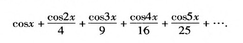
值得注意的是，如果x处于0和2π之间，则该级数收敛于1/4x2-1/2πx2+1/6x2。（“角”x以弧度为单位。）如果x被定为0，则我们就得到
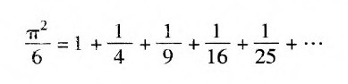
就像莱布尼茨级数收敛于π/4一样，这个结果把π与自然数联系了起来，这里的自然数是完全平方数：
1×1=1，2×2=4，3×3=9，4×4=16，5×5=25，……
8.[Euclid]，第232页。
9.[Gerhardt]，第1卷，第338页。拉丁文的译者是Alexis Manaster Ramer。
10.正如我们在小学所学到的，不同的分数可以表示同一个数，比如1/2=2/4=3/6……
所以分数与自然数之间的一一对应是作为符号的分数的对应，而不是符号所代表的数的对应。而这是很容易确定的：只要从分数序列中除去所有那些各项不是最小的分数就可以了。
11.超限数的存在已经被法国数学家刘维尔于30年前以一种完全不同的方式证明了。刘维尔所能够证明的是，一个小数展开包含许多极长的0串的数只能是超限数。刘维尔的方法可以应用的一个例子是
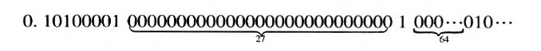
这里两个1之间的连续的0的数目是11=1，22=4，33=27，44=64等。当康托尔写这篇论文的时候，证明π是超越数尚待10年。而2√2是一个超限数的事实直到1934年才终获证明。
12.[Grattan-Guinness]，第358页。
13.康托尔对于基数的记法在今天使用得不多了。现在我们写|M|=而不是写M。
14.事实上，对于任何两个不等的基数，其中一个必定要大于另一个这一命题对于无穷集来说并不是显然成立的。在康托尔活着的时候，这个问题并未真正得到澄清。
15.要想弄明白为什么由一切自然数集所组成的集合的基数与实数集的基数是相同的，考虑一下只包含0和1两个数的数值的二进制表示是有益的。当我们写1/3=0.3333……时，它的意思其实就是1/3=3/10+3/100+3/1000+3/10000……
在二进制中，小于1的正实数可以用0和1的无限长的串来表示。例如
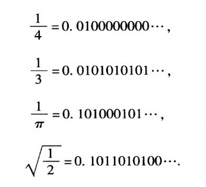
这里，当我们写下时1/=0.0101010101……时，它的意思其实就是
1/3=1/4+1/16+1/16+1/64……
（分母是2的连续幂，而非10的连续幂。）
现在，无论以什么自然数集开始，我们都可以像下面这样找到唯一一个实数与之对应：如果n是给定集合的一个成员，那么我们就在第n个位置上写1，否则就写0，这样我们便产生了一串0和1的序列。例如，如果我们始自偶数集，那么我们得到的序列就是0.01010101……，即我们已经看到的1/3。如果始自奇数集，那么我们得到的序列就是0.101010……=2/3。
这就表明，由一切自然数集所组成的集合的基数与0与1之间的实数集的基数是相同的。但康托尔证明了（这其实并不困难）这个集合的基数与由所有实数所组成的集合的基数是相同的。
还有一点技术上的小麻烦我必须提及。某些有理数将有两种不同的二进制表示，所以它们将对应于两个不同的自然数集。例如：
1/2=0. 1000000……
=0. 0111111……
所以实数1/2既对应着仅由1组成的集合，又对应着由除1以外的所有自然数组成的集合。尽管这破坏了我们的一一对应关系，但利用有理数集的基数为ℵ0的事实，这一困难便可克服。
16.正如康托尔所指出的，由一切实数集所组成的集合的基数也就是由一切从实数到实数的函数所组成的集合的基数。
17.参见[GHrattan-Guinness]以及[Dauben 1]。Barbara Rosen博士曾就这个问题向我友好地提出了专业的建议。
18.感谢Michael Friedman曾就康德及有关事项提供的帮助（尽管他不应为我对黑格尔的攻击负责）。
19.[Cantor 1]，第382页。
20.[Frege 4]。非常感谢Egon Borger, William Craig, Michael Richter和Wilfried Sieg对这段话以及前一注释中的话的翻译。
第五章
1.关于希尔伯特的信息，我参考了[Reid]的传记、奥托·布鲁门塔尔所写的传记文章[Hilbert]第388～429页，以及赫尔曼·外尔的悼文[Weyl]。
2.许多读者都很熟悉，√2是一个无理数。（正如上一章中所说，这意味着它不可能表示为以自然数为分子分母的分数，或者说，它的小数表示是不重复的。）根据这个事实，就可以对下述定理给出一个优美的非构造性的证明：存在着无理数a和b，使得ab是有理数。
在证明过程中，我们用字母q表示√2√2。现在，q必然或者是有理数，或者是无理数。如果q是有理数，那么我们就可以设a=b=√2而得到需要证明的结果。如果q是无理数，那么我们可以设a=q, b=√2，然后。
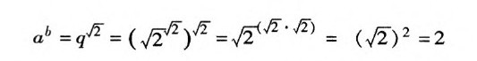
于是，我们又一次得到，一个无理数的无理数幂次结果为一个有理数。这个证明是非构造性的，因为它并没有给出满足该定理的具体的a和b，而仅仅给出了两种可能性，其中之一必定成立。（事实上，q是无理数，但对于这个事实还没有简单的证明。）
3.在代数不变量理论中，所谓的幺模变换是特别令人感兴趣的。这些变换的形式是，用表达式（py+q）/（ry+s）来代换一个方程中的一个未知量（比如x），其中y是一个新的未知量，p、q、r、s是使得ps一rq=1或-1的特定的数。布尔发现对于一般的二次方程ax2+bx+c=0（其中a, b，c可以代表任何数），表达式b2-4ac（被称为方程的判别式）在这种幺模变换下是一个不变量：
在给定的二次方程中作了所说的代换并清除了分数之后，一个以y为未知数的新的二次方程就产生了。这个方程可以写成Ay2+By+c=0，其中A, B，C取决于a、b、c、p、q、r、s所有这些量。b2-4ac是不变量的意思是，新的方程的判别式与给定的方程的判别式是相同的，即b2-4ac=B2-4AC。
如果没有ps-rq=±1这个特定条件，这两个判别式的关系就是：
B2-4AC=（b2-4ac）（ps-rq）2。
希望自己算出这个结果的读者可以先写下
ax2+bx+c=a（x-x1）（x-x2），
其中x1，x2是方程的两个根，应用二次公式
b2-4ac=4a2（x1-x2）2
4.在那篇悼文中[Weyl]，赫尔曼·外尔写道：
5.古典形式的数论处理的是可以在自然数1，2，3，……中发现的关系和样式，特别是有关素数和整除性的问题。在代数数论中，这些问题中有一些与某些代数方程的整数根（实根或复根）有关。高斯已经研究了形式为m+n√-1的数，其中m和n都是普通整数，发现了这些“高斯整数”中哪些是素数，并且证明了这样一条定理，即对于这些数来说，它可以以一种方式分解为素数，就像普通整数的情况那样。然而，如果我们研究形式为m+n√10的数，那么这个结论就不对了。一个反例是，
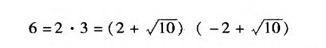
可以证明，其中2、3、2+√10和-2+√10都是素数，于是唯一的因式分解就不成立了。康托尔的朋友戴德金和他的强硬对手克隆内克都已经说明了如何通过考虑所谓的素数理想来重新得到唯一的因式分解。在散步的时候，希尔伯特和他的朋友胡尔维茨已经讨论了这些相互竞争的立场，并认为两者都是糟糕的。与此相反，希尔伯特在《数论报告》中的处理是优美的。
6.[Hilbert]，第400，401页。
7.希尔伯特在演讲中没有时间一一讲完23个问题，他只能挑一些来讲。关于整个讲演以及由玛丽·温斯顿·纽森英译的所有23个问题，参见[Browder]，第1～34页。
8.参见[Browder]。（我是这篇关于第十问题的文章的合作者。）
9.引文详细的内容见第四章结尾。
10.[van Heijenoort]，第129～138页。
11.[Poincaré]，第3章。
12.同上。
13.同上。
14.对罗素的“精心设计的、使用起来很不方便的”分层的技术表达是“分支类型论”。
15.就像弗雷格的《概念文字》一样，《数学原理》中主要的推理规则是从两个形式分别为ΑΒ和Α的公式推出相应的公式Β所谓的肯定前件推理或分离规则）。尽管弗雷格非常清楚这一点，但怀特海和罗素却通过把这条规则表达为他们的“原始命题”而使人难以理解：真命题所蕴含的任何东西都为真（[White-Russ]，第94页）。
16.[Brouwer 2]。
17.布劳威尔的博士论文是用荷兰语写成的。英译本见[Brouwer 1]，第13～97页。
18.[van Stigt]，第41页。
19.引文出自布劳威尔的博士论文（[Brouwer l]，第96页）。
20.在这个非构造性证明的例子中，断言“q必定或者是有理数，或者是无理数”需要用到排中律。
21.外尔因康托尔和戴德金的著作中使用了所谓的非直谓定义而特别感到沮丧。如果被定义的项是该定义所使用的集合的一个成员，那么该定义就是非直谓的。从数学对象逐步被构造出来的哲学观点来看，这样一个定义是令人不快的，因为相关集合不可能先于它的一个元素被构造出来。相反的哲学观点被称为柏拉图主义，即数学对象事先就已经存在了，定义只是把它们挑选出来（比如：玛蒂尔达是屋子里最高的人），这是外尔所不能接受的。
22.这是1922年所作的一个讲演（首先是在哥本哈根，然后是在汉堡）的一部分。感谢瓦尔特·费尔舍使我注意到希尔伯特的激烈言辞与他那个时代之间的关系。讲演的全文（英译）可以在[Mancosu]，第198～214页中找到。我发现该译本非常准确，但没有完全表达原文中的激情。我参考了几个译本和原文（[Hilbert]，第159～160页），以期能译得更好。
23.[Reid]，第137～138、144、145页。关于德国知识界人士的宣言的背景，参见[Tuchman]，第322页。
24.[Reid]，第143页。
25.[Hilbert]，第146页（我的翻译）。
26.希尔伯特的纲领在一篇有趣的文章中得到了讨论，载[Manco-su]，第149～197页。基于清楚表明希尔伯特思想演化的未发表的材料所作的详细讨论和分析，参见[Sieg]。关于贝尔奈斯的贡献的有趣信息，参见[Zach]。关于冯·诺依曼把直觉主义归于荒谬，参见[Manco-su]，第168页。应当提到，尽管希尔伯特关于哪些方法可以算作“有限”的描述从来也不够清楚，但普遍认为，他的看法甚至比布劳威尔准备接受的方法更为严格。
27.[van Heijenoort]，第373页。
28.[van Heijenoort]，第376页。
29.[van Heijenoort]，第336页。
30.[Reid]，第187页。
31.[van Stigt]，第272页。
32.[van Stigt]，第110页。
33.[van Stigt]，第285～294页；[Mancosu]，第275～285页。
34.关于计算机科学中的直觉主义逻辑，参见[Constable]。
35.[Hilbert]，第378～387页。
36.[Dawson]，第69页。
第六章
1.关于爱因斯坦谈论哥德尔投票给艾森豪威尔一事，参见[Daw-son]，第209页。我很幸运能够读到这本哥德尔的传记，它写得相当好。我也利用了1983年在萨尔茨堡举行的哥德尔专题讨论会（我也有幸被邀请）的简明文集[Gǒdel-Symp]。在格奥尔格·克莱瑟尔所著的悼念回忆文章[Kreisel]中有很多有趣的材料，但不幸的是它们并不是完全可靠。克莱瑟尔一度曾是哥德尔的密友。在[Gǒdel]，第一卷，第1～36页有一篇关于哥德尔的简短而感人的传记，作者是逻辑学家所罗门·费弗尔曼。
2.[Gǒdel]，第三卷，第202～259页。
3.[Dawson]，第58、61、66页。
4.[Gǒdel-Symp]，第27页。
5.“弗雷格-罗素-希尔伯特”是一种过于简化的说法。希尔伯特所挑选的基本逻辑只是弗雷格的系统和罗素的体系的一部分，它今天被称为一阶逻辑。
6.关于哥德尔谈论逻辑学家们的盲目一事，参见[Dawson]，第58页。哥德尔的博士论文以及以此为基础发表的文章可以在[Gǒdel]第一卷，第60～123页找到（原始的德文和英译文都有）。在这些文章前有伯顿·德莱本和让·凡·海金诺特写的一个富有启发性的导论，参见第44～59页。
7.虽然希尔伯特的元数学中的有限性方法经常会被说成是“直觉主义的”，但希尔伯特所思考的方法很有可能要比布劳威尔所允许的严格得多。关于对该问题的讨论，参见[Mancosu]，第167～168页。
8.[Gǒdel]，第一卷，第65页。
9.当一串0被放在一个十进位制表示的自然数之前时，该自然数并不会改变。例如：17=017=0017，以此类推。所以字符串Ly和，Ly和，Ly都可用17这个数来编码。然而，由于我们对以逗号开头的字符串没有兴趣，所以这种含糊不清就无须考虑。虽然它并不真的重要，但这里仍然可以提到，在哥德尔用来为字串编码的实际技巧中，他并没有使用十进制的数字来表示数。根据一个自然数可以被唯一地分解为素因子的乘积这一事实，他把分配给符号的码数作为指数加在了相应的素数上。一个简单的例子将使我们看清楚其中的区别。字符串L（x, y）在我们的方案中将被编码为186 079，在哥德尔的方案中，其码数将是2138567011 7139。
10.这篇划时代的文章有许多英译本，其中最好的译本（以及哥德尔所认可的一个译本）均见于[Go del]，第一卷，第144～145页（对页有德文原文）以及[van Heijenoort]，第596～616页。对哥德尔发现他的不完备性定理的过程有兴趣的读者可以参见[Dawson]，第61页。
11.为了避免使用像“真理”这样的在哲学上受到怀疑的概念，哥德尔诉诸于一种技术上的替代物，他称之为ω一致性，它是一种加强了的一致性。于是，他的定理的正确表述就是：如果PM是ω一致的，那么就存在着一个命题U, U和┒U在PM中都是不可证的。几年以后，J.
B，罗塞尔说明了如何用普通的一致性假设来替代ω一致性假设，从而做出了重要的改进。与同时期的其他一些工作（特别是阿兰·图灵的工作，这将在接下来的一章中讨论）结合在一起，我们就可以以一种吸引人的形式把哥德尔的结论表述出来：无论在PM中加入什么样的附加公理，只要新的公理是通过一种算法来指定的，而且它们不会导致一个可证明的矛盾（比如一个形式为A∧┓A的陈述），那么系统中就必定存在着一个不可判定的命题U。
12.PM系统过于复杂，我们在这里难以详述。故此，我们用较为简单的系统PA来显示在构造不可判定命题时所牵涉的一些因素。PA可以用16个符号建立起来：
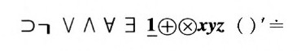
符号1，+，×，=之所以写成古怪的样子，是为了强调它们将仅仅被视为符号，同时也暗示它们原有的含义。字母x, y，z是表示自然数的变元，由于所需要的变元不只3个，所以我们可以把符号’加在那些字母上方，从而可以产生出任意多个变元。于是，y’和Zm都是变元。由于这里的符号超过了10个，我们将使用一种编码表，其中每一个符号都被一对十进制数字所替代：
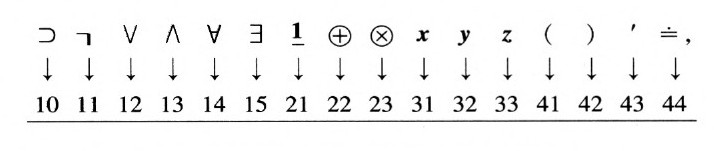
自然数本身又被特定的字符串所表示，这些字符串被称为数字符号（numerals），如下所示：
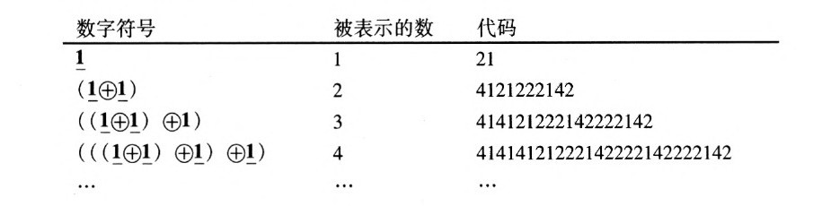
大多数由这些符号所组成的字符串都是毫无意义的，例如：
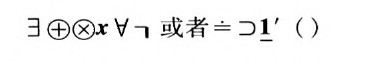
它们的代码分别是15222331 141 1和441021434142。但某些被称为句子的字符串可以被用来表示关于自然数的真假命题。
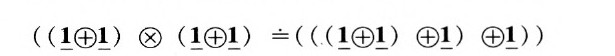
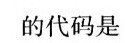
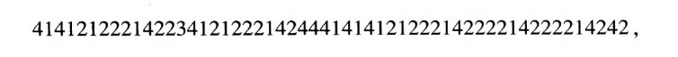
它表示真命题2乘2等于4。
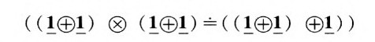
则表示假命题2乘2等于3。
的代码是
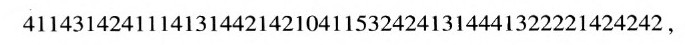
它表示除1以外的所有自然数都有前趋。
为了完成我们对PA的描述，有必要把某些特定的句子指定为公理和用于从公理推出可证句子的推理规则。从公理开始，到PA中的一个可证句子结束，其间的整个步骤被称为该句子的证明。虽然仔仔细细做完此事会把我们带得太远，但我们还是来考虑一个简单的例子：
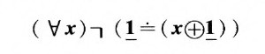
它表示这样一个命题：1不是任何自然数的直接后继。这个句子完全可以被选为一条公理。既然句子开头的符号表示某种属性对于所有自然数都适用，那么一条自然的推理规则就是，允许用一些数字符号来替换x。这只是从一个普遍陈述推出它的一个特殊情形。下面是一个简单的例子：
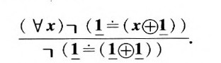
该结论是PA中的一个可证句子，它是通过用1替换变元x而得到的，它表示1和2是不等的这一事实。
除了用来表示命题的字符串外，还有其他一些被称为一元字符串，它们可以被用来定义自然数的集合。这些字符串将包含符号x，但不包含“量词”（虽然它可以包含像y或xn这样的关于其他变元的量词）。此外，一元字符串有一种至关重要的性质：假如所有x都被某个数字符号所代替，那么由此得到的字符串将是一个句子。以下是一元字符串的一个例子：
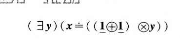
假如x被数字符号（1⊕1）所代替，则我们就得到了真句子
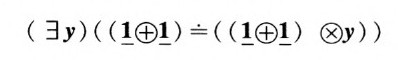
假如x被数字符号l所代替，我们就得到了假句子
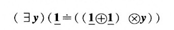
可以认为这个一元字符串为偶数集提供了一种定义。以下是一个更为复杂的一元字符窜：
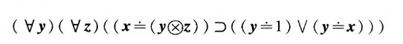
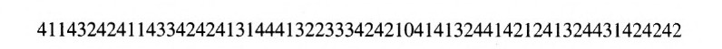
它定义了由1和全部质数所组成的集合。给定一个一元字符串A和自然数n，我们将用符号[A：n]来表示用表示数字n的数字符号来替换A中的x所得到的句子。
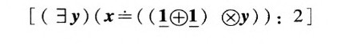
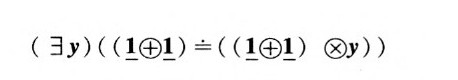
现在，我们就可以解释如何用哥德尔的方法生成PA中的一个句子U，该句子表示U本身在PA中是不可证的这一命题。使用被分配给一元字符串的码数，我们就可以依照它们的代码大小将其全部排列起来。在这种排序中，代码最小的一元字符串是（x=l），即使连它的代码也是4131442142，超过了40亿。我们用A1来表示这个一元字符串，并想象所有的一元字符串都依照它们代码的大小排成一个序列：
Al,A2，A3，……
因为这些都是一元字符串，所以对于任意的自然数n,m，字符串[An：m]就将是一个句子。这些句子中的某一些在PA中将是可证的，另一些则是不可证的。对于每一个，我们都可以考虑由那些使得字符串[An：m]在PA中是不可证的m所组成的集合。回忆一下我们对康托尔的对角线方法所作的讨论，我们看到这样一个集合可以被看成一个以n为标签的包裹。运用对角线方法，也就是说，把包裹中的一个元素当作标签，我们就可以构造出一个由那些使得[An：n]在PA中不可证的n所组成的集合K。利用PA中的可证明性可以在PA中进行定义这一事实，我们就可以找到一个一元字符串B，它在PA中定义了集合K。现在，必然存在着某个数q使得B=Aq，因为所有的一元字符串都包含在As的序列中。于是，对于每一个自然数n，句子[Aq：n]都表示命题[An：n]在PA中是不可证的。特别地，当n被赋予q值时，我们可以看到，[Aq：q]表示命题[Aq：q]在PA中是不可证的。
因此，[Aq：q]是PA中的一个句子，它表示它本身在PA中不可证这一命题。
13.在哥德尔证明了PM的一致性不能用PM所包含的全部数学资源进行证明之后，我们很自然地会得出结论说，用希尔伯特将会允许的有限性方法来证明这种一致性是不可能成功的。这肯定也是冯·诺伊曼的结论。哥德尔本人并不是如此确信，他仍然抱有一种希望：也许存在着某些在PM内部不被允许的方法可以被认为是有限性方法，它们将导致对一致性的证明。在哥德尔的发现做出之后的几十年中，有些人声称自己提出了某种方法，它能够满足这种标准。结果，尽管几乎没有人会宣称，已获证明的一致性定理给相关系统的有效性增加了任何信心，但希尔伯特的证明论作为一个研究领域仍然持续不断地蓬勃发展。
14.那些主要被用于软件业的程序设计语言（比如C语言和FOR-T RAN语言）通常被说成是命令式的，这是因为可以认为用这些语言编写的一行行程序就是计算机所执行的命令。像C++这样的模件式语言也是命令式的。在那些所谓的功能程序设计语言（比如LISP语言）中，程序的字符行就是操作的定义。它们不是告诉计算机做什么，而是定义计算机将要提供什么。哥德尔的特殊语言非常像一种功能程序设计语言。
15.回到我们所建议的那种特殊编码方式的PA的例子，我们可以考察在把元数学概念翻译成数值运算的过程中所涉及的一些问题。我们可以提出的第一个问题是，给定某一字符串的码数，我们如何能够说出该字符串的长度？现在，由于我们用两个阿拉伯数字来表示一个符号，所以答案很简单：字符串的长度等于代码中的数字数目的一半。对于一个码数r，我们将把相应的字符串的长度记为（r）。给定两个字符串，我们总是可以通过把第二个字符串放到第一个字符串后面来构成一个新的字符串。第二个问题是，如果给定的两个字符串的代码分别是r和s，那么所组成的新的字符串的代码是什么？答案可以通过公式rl02（s）+s来计算。这是因为，r乘以10的2（s）次幂可以表示在r后加了多少个O，这也就是s中的数字的个数。遵循哥德尔的方法，我们把它写做r*s。现在假定r和s是两个句子的代码，如果我们在这两个句子之间插入符号]，并将结果用括号括起，那么这样得到的新句子的代码是什么？通过查译码表，我们知道答案是41*r*10*s*42。按照这种方法不断进行下去，即使是更复杂的元数学概念也可以被翻译成算术运算。
16.中国剩余定理显然可以追溯到公元11世纪时的中国。该定理可以用如下的练习加以说明：试找到一个数，它被6除余2，被11除余5。经过一番简单的试验之后，可知这个数是38。中国剩余定理保证我们总可以找到一个数，它被给定的数所除后余数是另一个给定的数，只要这些给定的除数两两之间没有公因数（当然不包括1）。例如，肯定存在着这样一个数，当它被69、17、25、91所除后，余数分别为13、7、10、11。但是假如我们把7换成14，那么这个结论就不能保证成立了（因为10和14有公因数2）。哥德尔把中国剩余定理用作一个编码装置：设计一组两两之间没有公因数的除数，然后让它们都除以同一个数，我们就可以定出一连串数字。由于“余数”在算术的基本语言中是容易定义的，所以它可以被用来表示在该种语言中包含自然数序列的关系。
哥德尔用中国剩余定理去为有限的自然数序列编码的技巧在我个人的职业生涯中扮演着重要的角色。作为我博士论文研究（1950年为普林斯顿大学所接受）的一部分，我钻研了希尔伯特的第十问题，而中国剩余定理对于我所能够获得的部分结果相当重要。后来我与希拉里·普特南以及朱莉娅·鲁宾逊共同开展的工作仍然需要用到此定理。解决希尔伯特的第十问题的关键的最后一步是俄国22岁的数学家尤里·马蒂雅谢维奇在1970年做出的。有兴趣的读者可以参考专门为普通读者所写的文章[Dav-Hersh 2]。
17.卡尔纳普、海丁和冯·诺伊曼在柯尼斯堡所作演讲的全文可以在[Ben-Put]，第41～65页找到。
18.关于哥德尔在柯尼斯堡圆桌讨论会上的评论的完整陈述（德文原文和英译文）以及约翰·道森启发式的评论，参见[Godel]，第一卷，第196～203页。也参见[Dawson]，第68～71页。
19.[Dawson]，第70页。
20.[Goldstine]，第174页。
21.同上。
22.这项研究包含了非常大的超限基数，它超出了本书的范围。对此曾有一篇有趣的文章，其作者是一位一流的怀疑论者，参见[Fefer-man]。
23.[Dawson]，第32～33页，第277页。
24.[Dawson]，第34页。
25.[Dawson]，第111页。
26.[G？del-Symp]，第27页。
27.这些贡献中最有趣的部分与布劳威尔的学生海丁所发展的某些形式系统有关，海丁试图将布劳威尔的基本思想全都包含在内。布劳威尔本人确信，没有一种被精确定义的形式语言能够恰当地处理他的概念，但他还是对海丁的工作勉强表示了兴趣。海丁的系统中有一个是HA（表示海丁算术），它与PA非常类似，只是背后的逻辑规则是布劳威尔认为能够接受的规则，而不是弗雷格的规则。特别是，排中律在HA中是不成立的。哥德尔找到了一种简单的方法可以将PA翻译成HA，于是，与直觉主义比古典数学狭窄的想法相反，这里直觉主义在某种意义上包含了古典数学。特别是，任何对HA的一致性的证明立即可以被翻译成对PA的一致性的证明。
28.[Dawson]，第103～106页。
29.[Godel-Symp]，第20页。
30.[Dawson]，第142页，第146页。
31.[Dawson]，第91页。
32.[Dawson]，第147页。
33.[Dawson]，第143～145页，第148～151页。
34.[Dawson]，第153页。
35.[Browder]，第8页。
36.更精确地说，哥德尔说明的是：如果像PA这样的系统或者那些建立在集合论公理上的系统是一致的，那么即使是把连续统假设作为一条新的公理加进去，它也仍然是一致的。因此，如果这些系统是一致的，那么在其内部连续统假设就不可能被否证。
37.这场斗争很是激烈。杰出的逻辑学家所罗门·费弗尔曼在一篇发表于本书写作期间的文章[Feferman]中称，连续统假设“本来就是含糊不清的”。在经历了最初的一些摇摆不定之后，哥德尔终于认为连续统假设绝不是含糊不清的，事实上，它是一个完全有意义的断言，并且很可能是错的。逻辑学家W·休·伍丁近期的工作强烈地暗示哥德尔是正确的。
38.[Gǒdel]，第二卷，第108，186页。
39.[Gǒdel]，第三卷，第49～50页。
40.[Gǒdel]，第二卷，第140～141页。
41.[Gǒdel]，第三卷收录了大部分以前未曾发表的哥德尔的著作。
42.[Dauben 2]，关于哥德尔希望让鲁宾逊做他的继任者，参见第458页；关于所引用的信件，参见第485～486页。
43.[Dawson]，第153，158，179～180，245～253页。
第七章
1.[Huskey]，第300页。
2.[Ceruzzi]，第43页。
3.我有幸看到了安德鲁·霍奇斯关于图灵的令人辛酸的文笔优美的传记；参见[Hodges]。
4.[Hodges]，第29页。
5.图灵用生动的话语表达了他对自己死去的朋友的感情：阿兰“敬重他所踏过的地板”，还有，“他使每个人都显得如此平凡”。参见[Hodges]，第35，53页。
6.[Hodges]，第57页。
7.[Hodges]，第94页。
8.事实上，希尔伯特并不是这样提出判定问题的：他想知道的是，给定一个一阶逻辑表达式，如何有一种程序来判定它是否在任何可能的解释中都是有效的。不过，在哥德尔证明了他的完备性定理之后，情况就已经很清楚，这里问题被陈述的形式等价于希尔伯特的表述。
9.关于判定问题的工作主要是处理被称为前束式的表达式。它们是包含┓，∧，∨，等逻辑符号的表达式，其中所有的存在量词和全程量词都先于所有其他符号出现在表达式的开头。不难证明，判定问题可以被还原为为这样一个问题找到一种算法，即给定一个前束式，判定它是否是可满足的，也就是说，是否存在着某种解释前束式中非逻辑符号的方法，使得它可以表示一个真句子。为了说明这个概念，考虑以下两个前束式：
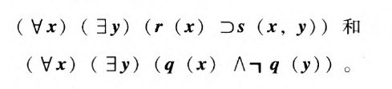
第一个前束式是可满足的：例如，我们可以令变量x,y表示在某一时刻活着的人，r（x）表示“x是一个一夫一妻制的结婚的男人”，s（x,y）表示“y是x的妻子”；于是，根据这一解释，第一个前束式说的就是“每一个一夫一妻制的结婚的男人都有一个妻子”——这当然是一个真陈述。而第二个前束式则是不可满足的，因为无论如何选择个体域，无论如何解释符号q，这一前束式既规定所有个体都具有q所表示的性质，又规定有些个体没有这种性质。
前束式可以通过它们开头的存在量词和全程量词的特殊样式来分类。
哥德尔的相关论文（德文原文和英译文）见于[Godel]，第一卷，第230～235，306～327页。沃伦·格尔德法伯为这一卷写的说明性的导言介绍了关于这个问题的某些早期工作。
10.[Hodges]，第93页。
11.图灵对这一点的讨论是更为细致的；参见[Turing 2]，第250～251页。也参见选集[Davis l]，第136～137页。
12.尽管判定问题的不可解性可以用这种方法来证明，但它是相当麻烦的，因为我们需要改进图灵机的构造来处理十进制整数。为了理解图灵的实际工作，我们先来说明，判定一台带子完全空白的图灵机是否会停机的问题是不可解的。因为如果假定这个问题有一种算法，那么为了检验码数n是否属于D，我们先写出构成码数为n的图灵机T的五元组，然后写出使n写在图灵机带子上的五元组。把这些五元组加在T的五元组上，我们就得到了一台新的机器，它将先把n写在带子上，然后按照输入n时T的响应来运转。这台从空白带子开始的新机器最终将停机，当且仅当T从带子上的n开始时会最终停机，而后一结论成立，当且仅当n不属于D。因此，所假定的用于检验一个从空白带子开始的给定的图灵机最终是否会停机的算法，可以被用来解决判定一个数是否属于D的不可解问题。
我们还注意到，一台给定的图灵机是否曾经印下一个符号的问题也是不可解的。这是因为，很容易使得一台图灵机无论什么时候停机，它都处于不再启用五元组的状态F。我们选择这台机器的任何五元组中都没有出现的一个新符号X，然后加入五元组：
Fa：X*F
其中a可以是出现在原始五元组中的任何符号。无论最初的机器什么时候停机，这台新机器都将印上X。于是我们便得到，没有算法可以判定一台从空白带子开始的图灵机是否将印上某一符号。这是图灵用一阶逻辑语言表达的问题，于是我们便得到了判定问题的不可解性。
13.[Turing 2]，第129～132页。
14.[Davis 2]。
15.关于图灵博士论文的重印本，参见[Davis l]，第155～222页。我们所提到的分层结构还拓展到了康托尔的超限数，所以在第一个、第二个、第i个……系统之后的系统数将是ω，然后是ω+l等。
16.[Hodges]，第131页。
17.[Hodges]，第124页。
18.[Hodges]，第145页。对于那些熟悉柯尔莫果洛夫和柴廷关于复杂性描述的后期工作的读者来说，这个游戏可以很好地说明冯·诺依曼正在沿着那些思路进行思考。
19.[Hodges]，第545页。
20.图灵在布莱奇利庄园的合作者之一——数学家彼得·希尔顿叙述了图灵在地方军的冒险经历。参见[Hodges]，第232页。
21.完成这项工作绝非一人之功。也许贡献最大的人是W·T·塔特。关于塔特教授对这个问题的技术描述，以及图灵所起的作用，参见网址http：//home.cern.ch/frode/crypto/tutte.html。
第八章
1.这里的引文参见[Goldstine]，第22页。关于爱达·洛甫莱斯的那本迷人的传记[Stein]暗示，大部分有关她的事情皆为虚构而非事实。
2.[Goldstine]，第120页。
3.阿塔纳索夫的机器是为解决联立的线性方程组而设计的。这种问题的一个例子是
2x+3y-4z=5
3x-4y+2z=2
x-3y-5z=4
机器最多可以处理含有30个未知量的30个方程。
4.[Lee]，第44页。本章的传记材料主要来自于这本书。
5.[Burks-Burks]。
6.微分分析器含有若干旨在计算定积分的数值近似的部件。ENIAC也含有可以完成同样工作的部件，但由于使用了著名的算法，所以结果更为准确。
7.[Goldstine]，第186，188页。
8.虽然冯·诺依曼的“关于EDVAC的报告草案”流传很广，非常有影响，然而只是到了1981年，它才作为一本书的附录发表，而这本书对他的贡献的重要性是表示怀疑的。
9.[McCull-Pitts]；[von Neumann 2]，第319页。
10.[Goldstine]，第191页。
11.[Randell]，第384页。
12.[Goldstine]，第209页；[Knuth]。
13.[von Neumann 2]，第1～32页。
14.[von Neumann 2]，第34～97页。
15.关于极力抹杀冯·诺依曼对计算机的贡献，并且完全忽略图灵的贡献的研究著作的例子，参见[Metrop-Worlt]和[Stern]。关于埃克特备忘录（这是一位工程师的“揭发”）中的节选，参见[Stern]，第28页。
16.[Stern]讨论了埃克特-莫齐利在商业上的努力的兴衰过程。
17.这里引用的对ACE报告的分析是一篇优秀的论文[Carp-Do-ran]。报告本身可以在[Turing l]，第1～105页中找到。在许多年里，它只是以油印形式流传，并不容易看到。
18.用现代的术语来说，图灵所建议的是用堆栈来代替子程序处理。堆栈可以以后进先出（LIFO）的结构对数据进行排列。于是，当一次计算被中断，以调用一个预先编好的子程序时，它必须记住子程序结束时所要回到的位置。由于子程序可以调用其他子程序，这将导致一个记忆这种中断位置的堆栈。图灵建议把放入堆栈的操作称为“bury”，从堆栈的“顶部”释放称为“unbury”。（今天用的是术语是“push”和“pop”。）
19.[Hodges]，第352页。
20.[Turing l]，第106～107页。
21.[Turing l]，第102～105页；[Hodges]，第361页。
22.[Metrop-Worlt]；[Stern]。
23.[Goldstine]，第191～192页。
24.[Turing l]，第25页。
25.[Davis 3]。
26.[Whitemore]。
27.[Mar cus]，第183～184页。所引的书是恩格斯著名的《英国工人阶级状况》。
28.[Lavington]，第31～47页。
29.[Goldstine]，第218页。
30.[Hodges]，第149页。
第九章
1.[Turing l]，第122页。
2.在美国科学促进会上发言的5位计算机科学家以及他们讲演的题目分别为：Joseph Y.Halpern, Episternic Logic in Multi-Agent Systems；Phokion G.Kolaitis, Logicin Computer Science-An Overview；Christos Papad-imitriou, Complexity A s Metaphor；M oshe Y.Var di, From Boole to the Penti-um；Victor D.Vianu, Logic AsaQuery Languagk.
3.关于约瑟夫·外岑鲍姆的简短的传记注释，参见[Lee]，第724页。
4.[Turing l]，第133～160页。
5.这篇文章[Searle]包含了他关于这个主题所写的其他一些东西。这段话实际上是对雷·库茨维尔的一本流行读物的评论。我并没有帮助库茨维尔反击塞尔的意思，而只是把这篇评论作为塞尔那些经常说起的观点的一个方便来源。
6.在算法过程的概念已经被图灵、丘奇和其他人阐明之后，哥德尔定理只能以这种方式进行表述了。
7.彭罗斯首先在他那本雅俗共赏的书[Penrose l]中作了这个断言。尽管有一些逻辑学家已经试图纠正他的错误，但他仍然坚持自己误入歧途的观点。我曾就这个话题写过一篇文章，参见[Davis 4]。[Penrose 2]中包含了对他的批评者的回应，[Davis]是我对他的回答所作的回复。
8.更多的相关信息和参考书，参见[Gödel]，第2卷，第297页。